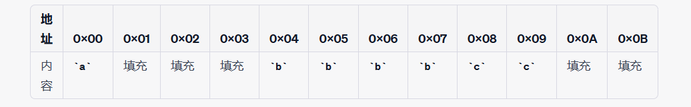
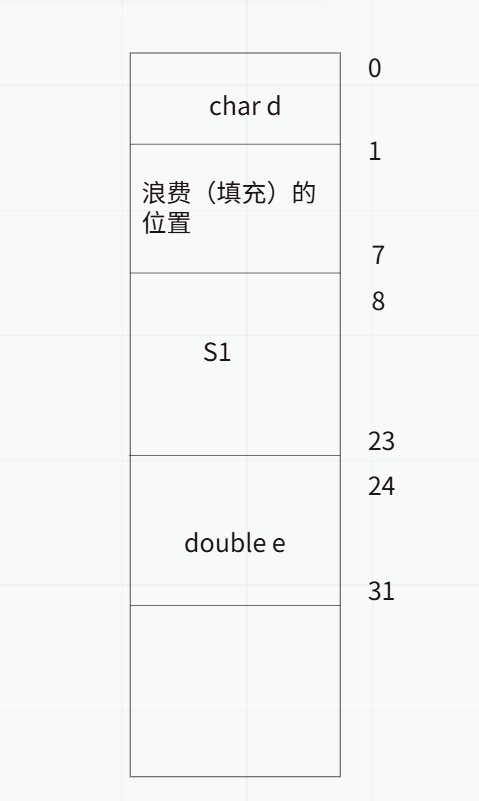
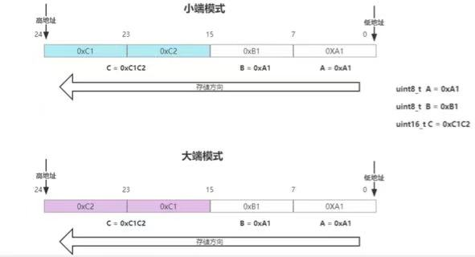

什么叫结构体对齐？
结构体对齐是内存对齐的一种应用，主要是为了使结构体中的各个成员在内存中按照一定的规则排列，以符合CPU对数据访问的要求。某些CPU对于访问内存中的数据要求必须按照一定的边界对齐。没有对齐可能导致CPU
多次读取内存，从而降低性能。内存对齐也可以简化编译器的设计，不用处理没有对齐的复杂情况。
0的地址处对齐数的整数倍的地址处较小值。(VS中默认的值为8、Linux环境默认不设对齐数（对齐数是结构体成员自身的大小）)最大对齐数（每个成员变量都有一个对齐数）的整数倍看着文字可能有点懵，上个例子：
struct Example {
char a; // 1 字节
int b; // 4 字节
short c; // 2 字节
};
a在地址0x00，占用1字节
为了保证b能够aligned到4字节边界(b的对齐数是4，存放地址应该是4的整数倍处)，编译器会在a和b之间添加3个填充字节
b在地址0x04，占用4字节
c(同理，c的对齐数是2，存放在2的整数倍处即可)在地址0x08，占用2字节
为了保证整个结构体 Example 的大小能够被最大成员（4 字节）对齐，编译器可能在末尾添加 2 个填充字节，使得结构体的大小为 12 字节
拓展1：内存体嵌套问题
规则： 嵌套的结构体对齐到自己的最大对齐数的整数倍处，结构体的整体大小就是所有最大对齐数（含嵌套结构体的对齐数）的整数倍。
例：
struct S1
{
double a;
char b;
int c;
};
struct S2
{
char d;
struct S1 s1;
double e;
};
结构体S1的大小为16，算错的再看看上面的例子重新算一算。S1被嵌套在S2里，那么来看看S2的内存分配情况。
char型占1字节，直接从0开始算。 S1的对齐位置应该是其最大对齐数，也就是8。整体如下：
拓展2：如何让结构体按照指定的对齐参数进行对齐?
#include <stdio.h>
#pragma pack(push, 1) // 将当前对齐方式设置为1字节对齐，并保存之前的对齐方式
struct PackedStruct {
char a;
int b;
short c;
};
#pragma pack(pop) // 恢复之前的对齐方式
int main() {
printf("Size of PackedStruct: %zu\n", sizeof(PackedStruct));
return 0;
}
#include <stdio.h>
struct AlignedStruct {
char a;
int b;
short c;
} __attribute__((aligned(16)));
int main() {
printf("Size of AlignedStruct: %zu\n", sizeof(AlignedStruct));
printf("Alignment of AlignedStruct: %zu\n", __alignof__(AlignedStruct));
return 0;
}
如果没有内存对齐机制，就意味着数据可以存放在任意的位置，若一个int变量存放在从地址2开始的四个连续的字节地址中，当cpu取数据时，就要先从0地址开始读取第一个4字节块,再剔除掉不需要的字节地址0和1,然后从地址4开始再读取下一个4字节块,也剔除不要的数据地址6和7,最后留下的两块数据再合并放入寄存器。这样就导致读内存次数增多，也就导致了工作效率的下降。同时，有些硬件平台并不支持随意地址存取，这可能会导致抛出硬件异常。
大小端指的是多字节数据在内存中存储时，字节的
排列顺序。具体来说，大端（Big-endian）模式将数据的最高有效字节（MSB）存储在最低的内存地址处，而最低有效字节（LSB）存储在最高的内存地址处。相反，小端（Little-endian）模式则将数据的最低有效字节存储在最低的内存地址处，最高有效字节存储在最高的内存地址处。
这么说肯定不太直观，结合个例子看看：

小端存C1C2,先将C2(低位)存在地址的低位，大端则相反，C2存放在地址的高位。
联合体（union）是一种特殊的数据结构，它允许在相同的内存位置以不同的类型来存储数据。联合体的所有成员共享同一块内存空间，这意味着它们在内存中的起始地址是相同的。
定义一个联合体（union），该联合体包含至少两个不同类型的成员：一个整型（如int）和一个字符型（如char）。由于联合体成员共享同一块内存空间，因此可以通过修改一个成员的值来观察另一个成员的变化。
将整型成员的值设置为一个已知的、具有特定字节模式的值（如0x01020304）。
检查字符型成员的值。如果字符型成员的值是0x04（即整型值的最低字节），则机器是小端模式；如果字符型成员的值是0x01（即整型值的最高字节），则机器是大端模式。
在大端（Big-endian）模式下，最高有效字节（0x01）存储在最低的内存地址处，最低有效字节（0x04）存储在最高的内存地址处。
在小端（Little-endian）模式下，最低有效字节（0x04）存储在最低的内存地址处，最高有效字节（0x01）存储在最高的内存地址处。
由于字符型成员只占用一个字节，并且它与整型成员共享同一块内存，因此字符型成员将“看到”整型成员在最低内存地址处的那个字节的值。
#include <stdio.h>
int check_endianness() {
union {
int i;
char c;
} test_union;
test_union.i = 0x01020304;
if (test_union.c == 0x04) {
return 0; // Little-endian
} else {
return 1; // Big-endian
}
}
int main() {
int result = check_endianness();
if (result == 0) {
printf("This machine is Little-endian.\n");
} else {
printf("This machine is Big-endian.\n");
}
return 0;
}
大端在我学习计算机网络时有涉及过，网络上传输的数据普遍采用大端模式（即网络字节序）。小端模式的设备在需要进行网络通信时，可以通过软件层面的转换来适应大端模式的数据格式。
然而在计算机里，还是小端用的要多一些。比较浅显的理由有这么两条：
低地址处存放的是数据的低字节。这种存储方式使得在强制转换数据类型时，不需要调整字节的内容。例如，将int类型的4字节数据强制转换为short类型的2字节数据时，可以直接取int数据的前两个字节（即低地址处的两个字节），因为它们刚好就是short类型所需要的最低两个字节。此外，CPU在做数值运算时，通常是从内存中依次从低位到高位取数据进行运算，直到最后刷新最高位的符号位。小端模式符合这种运算方式，因此可以提高运算效率。数据扩展时更加方便。例如，将16位整数扩展为32位整数时，只需在高地址处添0即可，而无需移动数据。